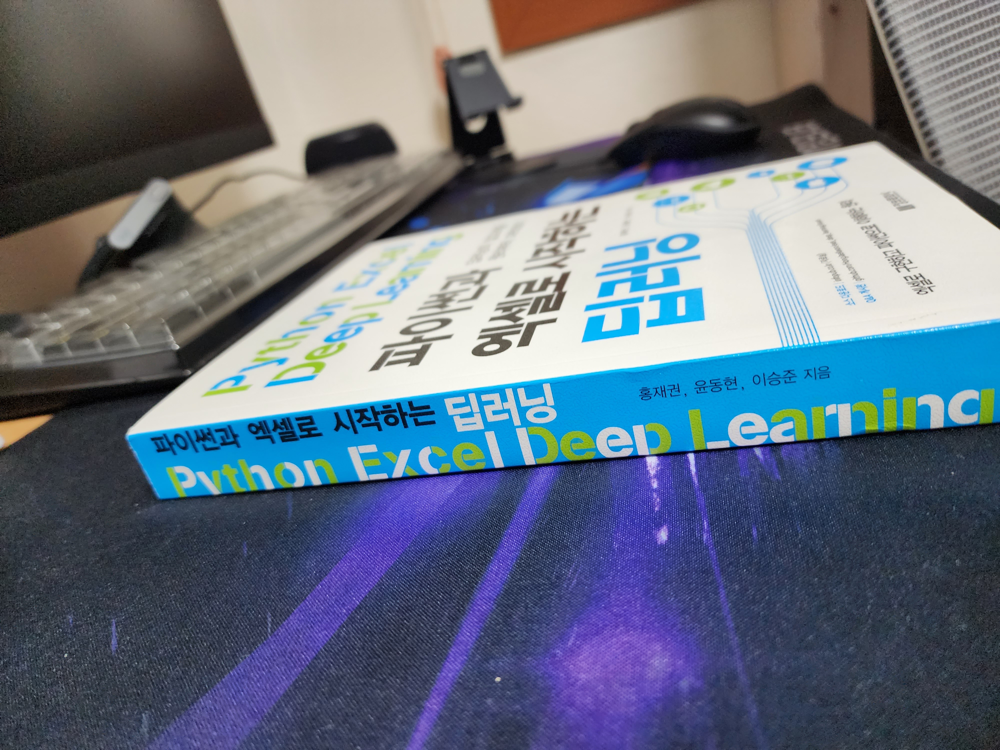
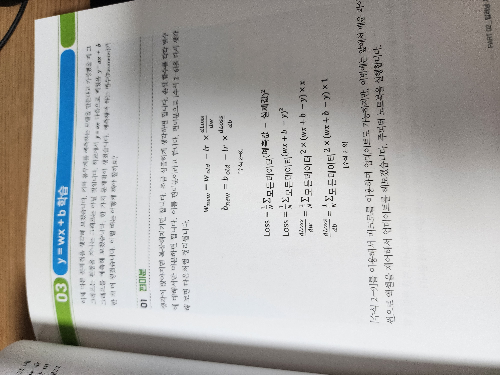
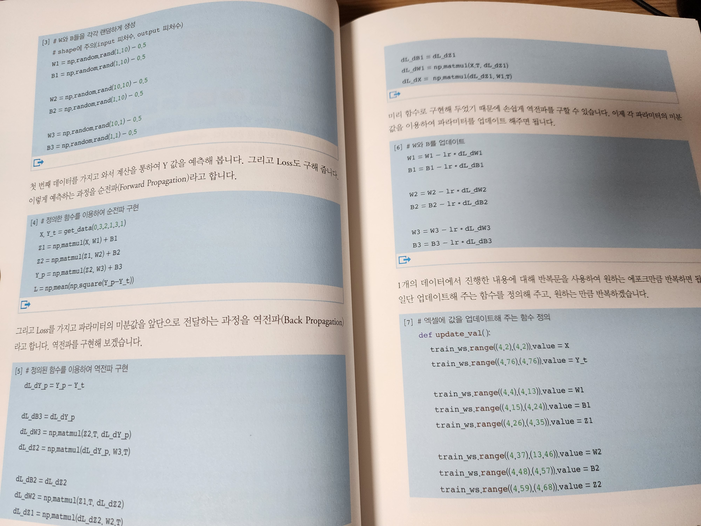
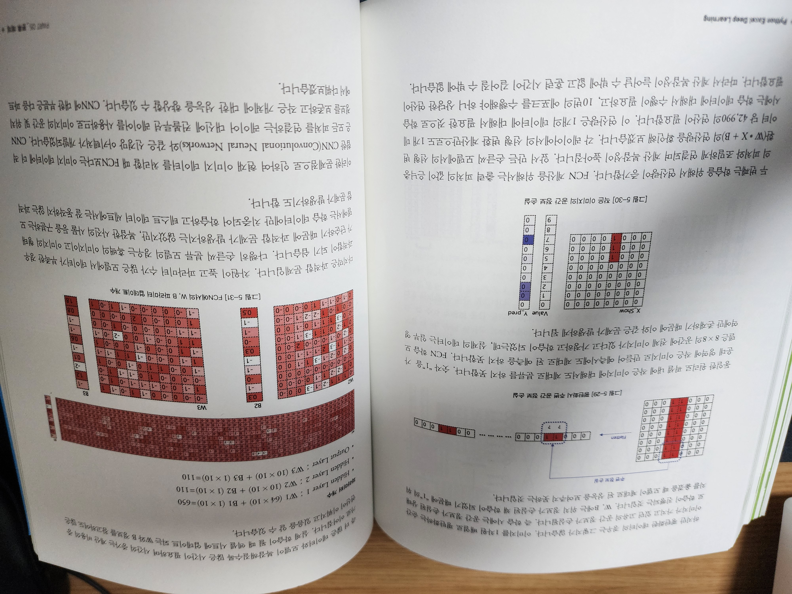

목차
PART 0 개발 환경 구축
- 파이썬 설치
- 필요 패키지 설치
- 파이썬-엑셀 연동 실습
PART 1 넘파이(Numpy)
- 배열(ndarray)
- 연산
- 미분
PART 2 딥러닝 개요
- 딥러닝 학습
- y = wx 학습
- y = wx + b 학습
- y = w1 × 1 + w2 × 2 + b 학습
- 임의의 함수 학습
PART 3 회귀 예제
- 당뇨병 예측 데이터
- 체력 검사 데이터
PART 4 분류 개요
- 이진 분류
- 다중 분류
PART 5 분류 예제
- 붓꽃 분류
- 손글씨 분류
PART 6 CNN
- 이미지 데이터 특성
- 필터와 합성곱(Convolution) 연산
- 합성곱의 역전파
- 모델 구현
- CNN 추가 정보
PART 7 RNN
- RNN 구조
- 순전파와 역전파 연산
부록 1 Google Spreadsheet 사용
- 구글 드라이브 API 설정하기
- 구글 스프레드시트 API 설정하기
부록 2 Tensorflow 사용
- 당뇨병 데이터
- 체력 검사 데이터
- 붓꽃 데이터
- 손글씨 데이터
- 영어 철자 예측 데이터
책 두께
 읽어보고 싶은 적당한 두께^^
{kind=link}
대상
- 전공자/비전공자 대상
- numpy, matplotlib등 딥러닝에 필요한 파이썬 기초 함수를 알고싶은 분
- 딥러닝에 필요한 미분, 편미분, 체인룰등의 수학적 개념까지 알고 싶은 분
- 대학원에서 배우는 깊은 수학적 지식까지 알고싶은 분
동기
회사에서 간단한 통계작업을 파이썬으로 수행했던 적이 있었다. 파이썬으로 통계작업을 하면서, 파이썬보다는 엑셀로도 가능한 것들은 엑셀로 하는 게 더 빠르지 않을까? 라는 의문을 가졌지만, 엑셀을 잘 다루지 못하기에 어쩔 수 없이 파이썬으로 계속 업무를 수행했다. 그때 마침 한양대학교 인공지능융합대학원에서 함께 공부 중인 학우분들이 집필한 책을 리뷰할 수 있었고 한장 한장 읽으며 간단한 데이터들은 엑셀로도 가능할 수 있다는 정답을 얻었고 엑셀과 파이썬을 연계할 수 있는 라이브러리 들을 공부할 수 있었다. 더해서 머신러닝, 딥러닝에 대한 기초도 복습할 수 있었다.
리뷰
수학적 지식
 대학원에 진학하기 전 인공지능에 관해 공부할 때 편미분이 무엇인지 까먹어서 유튜브, 블로그, 머신러닝을 위한 기초수학 책을 구매해서 공부한 적이 있다. 이 책은 내가 했던 수고를 덜어준다. 딥러닝의 기본이 되는 체인룰, 편미분, 확률적 경사 하강법 등 인공지능에 대한 기초 수학적 지식까지 포함하고 있는 훌륭한 책이다.
{kind=link}
수학적 지식에대한 코드
 일반적으로 인터넷강의, 사내 딥러닝교육을 수강하면 가장 기초적인 선형회귀를 처음 배우면서 강사님들은 단순히 아래처럼 하면 된다고 알려준다.
{kind=link}
import numpy as np
from sklearn.linear_model import LinearRegression
# 임의의 데이터 생성
np.random.seed(0)
X = 2 * np.random.rand(100, 1)
y = 4 + 3 * X + np.random.randn(100, 1)
# 선형 회귀 모델 생성 및 학습
model = LinearRegression()
model.fit(X, y)
# 모델 파라미터 출력
print("모델의 기울기 (가중치):", model.coef_[0][0])
print("모델의 절편 (편향):", model.intercept_[0])
# 예측
new_X = np.array([[1.5]]) # 새로운 데이터
predicted_y = model.predict(new_X)
print("새로운 데이터에 대한 예측 결과:", predicted_y[0][0])
딥러닝을 처음 배우는 입장에서는 이 코드가 뭔데? 하는 생각이 들어 이해하기 어려울 수 있다. 저 또한 그랬습니다. 그래서 유튜브, 블로그, 그리고 “핸즈온 머신러닝” 책 등을 살펴보았다. 하지만 이 책은 위 코드들이 어떤 원리로 이루어지는지를 자세히 설명하고, 코드를 밑바닥부터 직접 작성하며 따라갈 수 있어서 제가 찾아봤던 수고를 많이 덜 수 있습니다. 또한 개인적인 생각으론 이런 방식으로 학습하면, 실전에서 해결해야 하는 Task에대해 딥러닝 모델을 응용하여 구현하는 데 큰 도움이 될 것으로 생각된다.
응용

이제 배웠던 개념들을 통해 실전 Task를 풀어볼 수 있는 Part이다.
실전 Task에 적용하기 위한 데이터 전처리 및 모델구현 부분으로 이루어져있다. 딥러닝 문제를 풀다보면 행렬 차원이 커지고 Layer가 깊어지다보면 내가 구현한 모델을 놓치는 경우가 많다.
이 책은 그런 독자들을 위해 엑셀과 딥러닝 층간의 상호작용을 이해하기 쉽게 잘 서술되어 있다.
{kind=link}
마치며
딥러닝을 쉽게 접근하고 딥러닝을 위한 수학적 지식, 파이썬 코드까지 공부하며 딥러닝을 시작하고자 하는 분들께 강력히 추천합니다.
이 문서는
jhy156456에 의해 작성되었습니다.
마지막 수정 날짜:2023-07-30 19:00:00